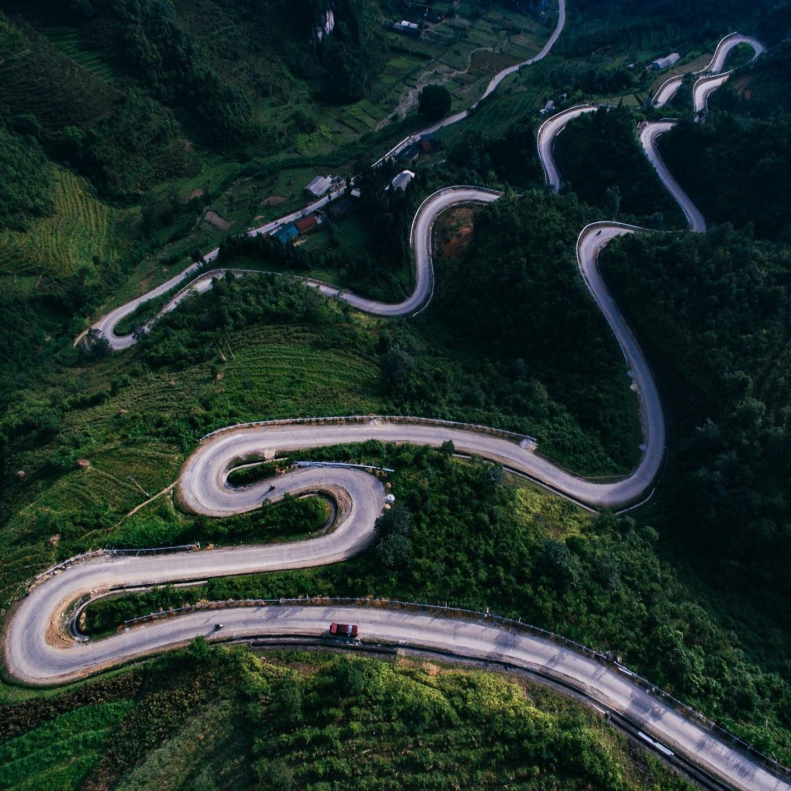
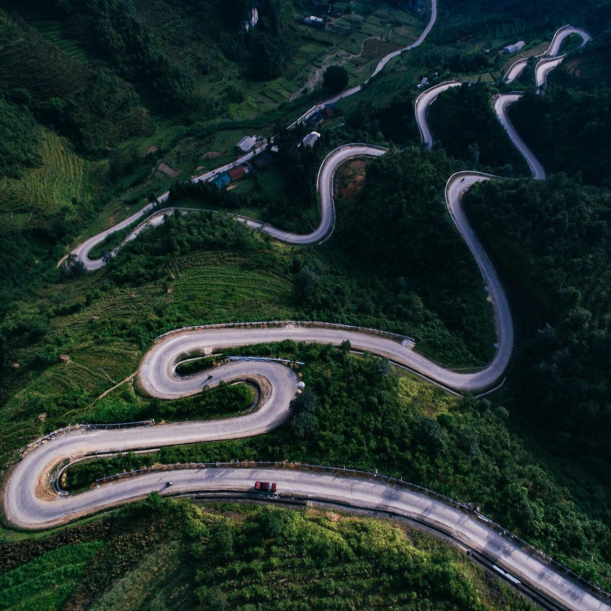

Đã bao gồm thuế và các chi phí phát sinh


Xem lịch trình đầy đủ
Vé trống cho bạn
T2, 15 Th9 - T4, 17 Th9
2 Người - 0 trẻ em
Tour ghép - Khởi hành từ TP Hồ Chí Minh (Lưu trú tại khách sạn 3 sao)
Bao gồm 1 đêm nghỉ tại khách sạn 3 sao tiêu chuẩn
Xem chi tiết
Trong chuyến đi 2 ngày 1 đêm đến 3 thành phố nổi tiếng của Đồng bằng sông Cửu Long này, bạn sẽ được ngắm nhìn những cảnh quan thiên nhiên bình dị và những nét văn hóa của con người và miền Nam Việt Nam. Ăn những món đặc sản của vùng Nam Bộ, chính mắt trải nghiệm chợ nổi nhộn nhịp, nếm thử trái cây mọng nước ngay tại vườn, nghe "đờn ca tài tử" — giá trị truyền thống mà đã chính thức được UNESCO công nhận là di sản phi vật thể, du ngoạn bằng thuyền trên những dòng sông lớn nhỏ — vì đó chính là cách sống của người dân nơi đây, và nhìn thấy nét duyên dáng mộc mạc và vẻ đẹp trong sự giản dị nhưng tràn đầy hạnh phúc của đồng bằng sông Cửu Long.
 Nguyễn Diệu Linh
Nguyễn Diệu Linh
Đúng lịch trình, khách sạn sạch đẹp, điểm đến hấp dẫn
 Vũ Mạnh Hiếu
Vũ Mạnh Hiếu
Giá cả hợp lý, đồ ăn và khách sạn quá oki so với giá tour ạ
 Trịnh Trung Kiên
Trịnh Trung Kiên
HDV và bác tài xế nhiệt tình, thân thiện. Được xem nhiều quy trình làm các món ăn đặc sản. Tour cũng được đi khá nhiều địa điểm
Xem tất cả đánh giá
Đã thêm vào danh sách yêu thích!
Xóa khỏi danh sách yêu thích
Bạn có chắc chắn không?
Chia sẻ tour này
Khám phá Miền Tây (Mỹ Tho, Bến Tre & Cần Thơ) - Tour 2N1Đ
https://www.travelulu.com/tour/ten-tour
X


 
